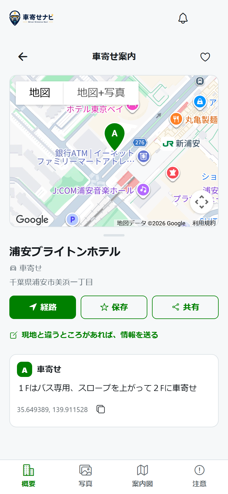
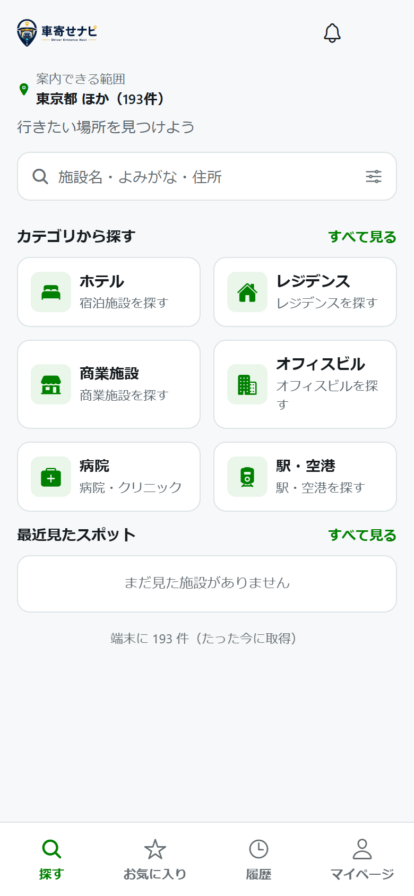
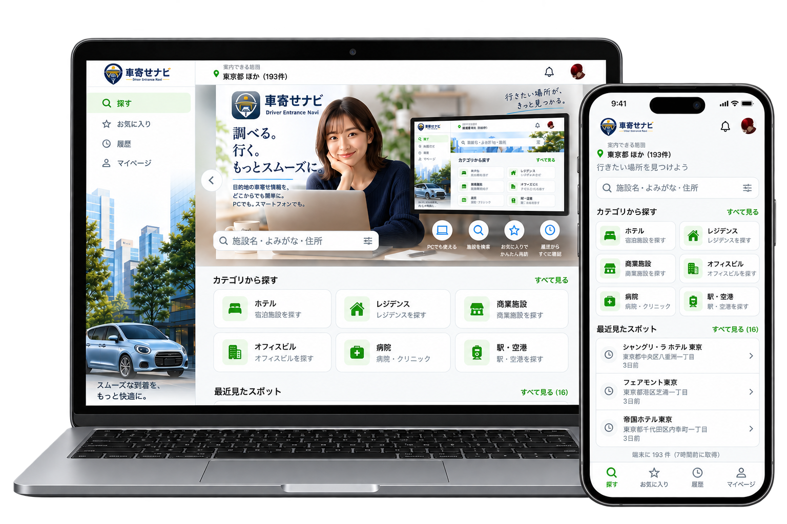

スムーズな到着を、もっと快適に。
ナビアプリによる車寄せやエントランスの位置情報が
実際の送迎先とずれている事があり、
お客様からお𠮟りを受けてしまったり
送迎時間が長く成ったりする事がありませんか？
車寄せナビはプロドライバーに寄り添った
車寄せやエントランスの案内をナビの案内を
正確に導くお手伝いをします。
-
案内先が、送迎先とずれている
ナビが示すのは建物の住所。車を着けられる場所は、裏手や地下、2階にあることも少なくありません。
-
入口を探して、周回してしまう
一方通行や右折禁止があると、一度通り過ぎただけで数分を失います。送迎の時間が延びていきます。
-
お客様を、お待たせしてしまう
荷物の多いお客様、急いでいるお客様ほど、到着の数分が印象を左右します。
たとえば
浦安ブライトンホテル
「１Fはバス専用、
スロープを上がって２Fに車寄せ」
住所へ向かうだけでは、バス専用の1階へ着いてしまいます。車寄せナビなら、2階の車寄せへの上がり方まで、出発前に確かめられます。
できることを見る
FEATURES
車寄せナビで、できること。
-

探す
施設名・よみがな・住所で、すぐ見つかる
漢字を思い出せなくても、よみがなで引けます。ホテル、病院、駅・空港など、行き先の種類からも探せます。
-
確かめる
車寄せの位置を、地図で
建物の住所ではなく、車を着ける場所そのものに目印を立てています。入口が複数ある施設は、ひとつずつ分けて載せています。
-
向かう
「経路」を押せば、ナビへそのまま
車寄せの位置を目的地にして、Googleマップなどの地図アプリへ渡します。住所を打ち直す必要はありません。
-
入り方
進入方法と注意事項を、言葉で
「スロープを上がって2階へ」「夜間は地下入口が閉鎖」。地図だけでは分からない入り方を、文章でお伝えします。
-
圏外でも
電波の届かない地下でも、開ける
施設の情報は端末に保存されています。地下駐車場や高架下など、目的地の手前で電波が途切れても表示できます。
-
いつもの場所
お気に入り・履歴・お知らせ
よく行く施設はお気に入りに。入り方が変わったときは、お知らせでお伝えします。
-
01
行き先を探す
施設名・よみがな・住所を入れるか、カテゴリから選びます。
-
02
車寄せと入り方を確かめる
地図の目印と進入方法で、どこへ、どう入るかを出発前に確かめます。
-
03
「経路」でナビへ
車寄せの位置を目的地にして、いつもの地図アプリで向かいます。

AREA
東京都外の、
193施設から。
2026年9月時点。対応する施設は、順に増やしています。
- ホテル
- レジデンス
- 商業施設
- オフィスビル
- 病院・クリニック
- 駅・空港
ただいま試験提供中です
試験提供の期間中は、無料でお使いいただけます。有料での提供を始める際は、事前にお知らせします。
FAQ
よくあるご質問
アプリのインストールは必要ですか？
必要ありません。ブラウザでそのまま開けます。ブラウザのメニューから「ホーム画面に追加」を選ぶと、ふつうのアプリと同じようにアイコンから開けます（iPhone は共有ボタンの中にあります）。
料金はかかりますか？
試験提供の期間中は無料です。有料での提供を始める際は、事前にお知らせします。お知らせだけで自動的に有料へ切り替わることはありません。
どの地域に対応していますか？
2026年9月時点で、東京都外の193施設に対応しています。対応する施設は順に増やしています。
電波が届かない場所でも使えますか？
使えます。施設の情報は端末に保存されているため、地下駐車場などで電波が途切れても表示できます。表示されるのは、最後に取り込んだ時点の内容です。
どの地図アプリで案内されますか？
「経路」を押すと、車寄せの位置を目的地にして Google マップなどの地図アプリが開きます。
1つのアカウントを、複数の端末で使えますか？
同時に使えるのは1台です。別の端末でログインすると、前の端末はログアウトされます。